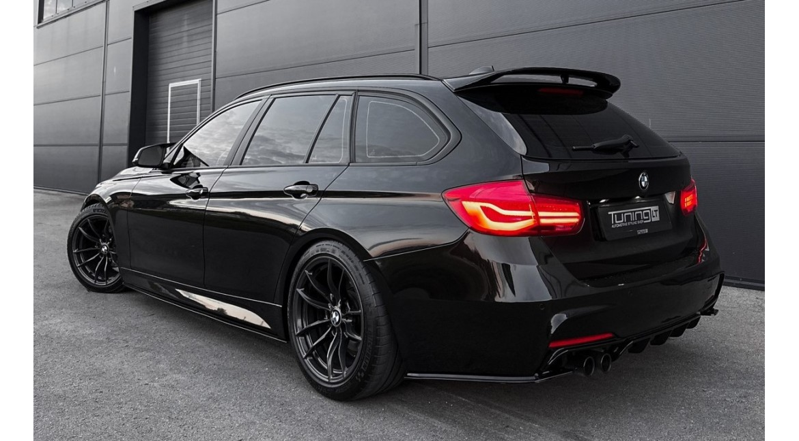

    <!-- Postituse sisu -->
    <div class="container mt-5">
        <div class="row">
            <div class="col-lg-8 mx-auto">
                <h1 class="mb-3">Remont või upgrade?</h1>
                <p class="text-muted">Avaldatud: 22. märts 2025</p>
                
                

                <p>Nii, BMW F31 on nüüd minu käes ja esimesed sõidud on tehtud. Nagu ikka, kasutatud auto ostuga tulevad kaasa ka mõned üllatused. </p>

                <h3>Esimesed <span class="text-danger">probleemid</span>, mis avastasin</h3>
                <ul>
                    <li> Vasak esimene rattalaager teeb kahtlast häält - Esimese 500 km jooksul hakkasin kuulma summutatud undamist.</li>
                    <li> Piduriklotsid vajavad vahetust - Natuke kriuksuvad ja pidurdustunnetus pole päris selline nagu peaks.</li>
                    <li> LED päevasõidutuled vilguvad aeg-ajalt - Võib olla kas kehv ühendus või vaja uut moodulit.</li>
                </ul>

                <h3>Kas see on remont või juba upgrade?</h3>
                <p>Kui juba ratta lahti võtame, siis tekkis mõte  kas panna kohe paremad pidurid ja teha sportlik upgrade? </p>

                <p>Praeguse plaani järgi tahan panna Brembo performance pidurid, mis annavad parema pidurdusjõu ja peavad kauem vastu. 
                Lisaks mõtlen ka madaldusvedrude peale, et saada sportlikum välimus ja parem juhitavus.</p>

                <h3>Mida järgmisena?</h3>
                <p>Praegu lasen remonditöökojal rattalaagri ja pidurid üle vaadata, aga ilmselt liigun ka madaldamise ja väljalaske poole. 
                Sellest juba järgmises postituses! </p>

                <hr>

                <!-- Kategooriad/Märksõnad -->
                <p><strong>Kategooriad:</strong> <span class="badge bg-primary">Autod</span> <span class="badge bg-secondary">Remont</span> <span class="badge bg-success">Tuuning</span></p>

                <!-- Eelmine ja järgmine postitus -->
                <div class="d-flex justify-content-between mt-4">
                    <a href="index_.php?page=post1" class="btn btn-outline-secondary">⬅ Eelmine postitus</a>
                    <a href="index_.php?page=post3" class="btn btn-primary">Järgmine postitus ➡</a>
                </div>
            </div>
        </div>
    </div>

